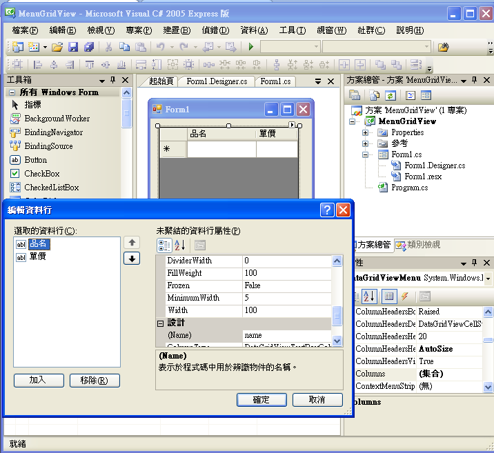
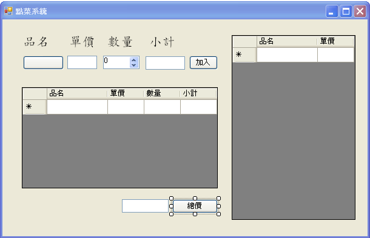

C# 視窗程式：DataGridView 與 ListView 元件
DataGridView 的使用
在微軟 .NET 的架構中，DataGridView 是一個強大而複雜的元件，我們欣賞其功能的強大，但也相當畏懼其複雜性，有時我們並不想將這個元件與資料庫綁在一起使用，但是卻不知道應該如何直接在元件中填入表格資料，以下是這個問題的一個簡單解法。
專案下載：https://dl.dropbox.com/u/101584453/cs/code/MenuGridView.zip
設計：當您用 Visual Studio 拉出一個 DataGridView 物件 (假設稱為 dataGridViewMenu) 後，可以點選其屬性中的 Columns 欄位，然後用視覺化的方式加入兩個 Column，並設定好名稱為 name (品名), price (單價)，以下是筆者設定時的畫面。

DataGridView 的設計介面
授課錄影：C# DataGridView 元件的使用 -- http://youtu.be/XzsZRqLAi30
賣泡沫紅茶的系統 (Point of Sale, POS)
授課錄影：
- C# 製作賣紅茶的 POS 系統 -- http://youtu.be/XX0wHhvkkiE
- 設計飲料店點菜系統 (1/2: 介面設計) -- http://youtu.be/4NRzpSNLQ44
- 設計飲料店點菜系統 (2/2: 程式邏輯) -- http://youtu.be/KO6fENU5Yfo
為了展示如何用 C# 設計一個小型的銷售點系統，我們設計了一個販賣飲料的 POS 軟體，可以讓販售者於電腦上點選飲料與數量，然後系統會自動計算總金額，這個程式可以用 ListView 或 DataGridView 元件進行設計，在上述的專案下載連結中，我們分別設計了這些專案，以下說明是我們使用 DataGridView 的設計方式的結果。
專案下載：
- 簡易版 -- https://dl.dropbox.com/u/101584453/cs/code/Menu1.zip (只有一樣商品：紅茶)
- 完整版 -- https://dl.dropbox.com/u/101584453/cs/code/Menu2.zip (使用 ListView)
- 豪華版 -- https://dl.dropbox.com/u/101584453/cs/code/POS2012.zip (2012 年更新版，使用 DataGridView)

賣泡沫紅茶的系統的畫面設計
程式碼
using System;
using System.Collections.Generic;
using System.ComponentModel;
using System.Data;
using System.Drawing;
using System.Linq;
using System.Text;
using System.Windows.Forms;
namespace POS
{
public partial class FormMenu : Form
{
String name; // 品名
double price; // 單價
double number; // 數量
double subTotal; // 小計
public FormMenu()
{
InitializeComponent();
// 填入銷售項目到菜單中
DataGridViewRowCollection rows = dataGridViewMenu.Rows;
rows.Add(new Object[] { "紅茶", 25 });
rows.Add(new Object[] { "綠茶", 25 });
rows.Add(new Object[] { "奶茶", 30 });
rows.Add(new Object[] { "珍珠奶茶", 35 });
}
private void dataGridViewMenu_CellClick(object sender, DataGridViewCellEventArgs e)
{
// 選取某項目，將該項目的品名價格放入待購項目中。
if (dataGridViewMenu.Rows[e.RowIndex].Cells[0].Value == null)
return;
buttonName.Text = dataGridViewMenu.Rows[e.RowIndex].Cells[0].Value.ToString();
textBoxPrice.Text = dataGridViewMenu.Rows[e.RowIndex].Cells[1].Value.ToString();
}
private void buttonAdd_Click(object sender, EventArgs e)
{
// 加入紐被按下
calculateSubTotal(); // 計算小計，並加入到訂單中
dataGridViewOrder.Rows.Add(new Object[] { name, price, number, subTotal });
calculateTotal(); // 重新計算總價
}
private void calculateSubTotal() // 計算小計
{
name = buttonName.Text;
price = double.Parse(textBoxPrice.Text);
number = (double)numericUpDownNumber.Value;
subTotal = price * number; // 小計 = 價格 * 數量
textBoxSubtotal.Text = subTotal.ToString();
}
private void calculateTotal() // 計算總價
{
double total = 0.0;
for (int i = 0; i < dataGridViewOrder.Rows.Count; i++)
{
DataGridViewRow row = dataGridViewOrder.Rows[i];
if (row.Cells[0].Value != null)
total += (double)row.Cells[3].Value;
}
textBoxTotal.Text = total.ToString();
}
private void numericUpDownNumber_ValueChanged(object sender, EventArgs e)
{
calculateSubTotal(); // 數量修改時，重新計算小計。
}
private void buttonTotal_Click(object sender, EventArgs e)
{
calculateTotal(); // 按下總價紐時，重新計算總價。
}
}
}執行結果

賣泡沫紅茶的系統的執行結果
參考文獻
- Data Binding in .NET / C# Windows Forms -- http://www.akadia.com/services/dotnet_databinding.html
- C# DataRow Examples -- http://dotnetperls.com/datarow
- How to bind a DataGridView to a DataSet without a database? -- http://www.devnewsgroups.net/windowsforms/t57859-how-bind-datagridview-dataset-without-database.aspx
- Data Binding in DataGrid Control - Part 1 -- http://www.c-sharpcorner.com/UploadFile/mahesh/DataBindingInDataGridMCB112022005002207AM/DataBindingInDataGridMCB1.aspx